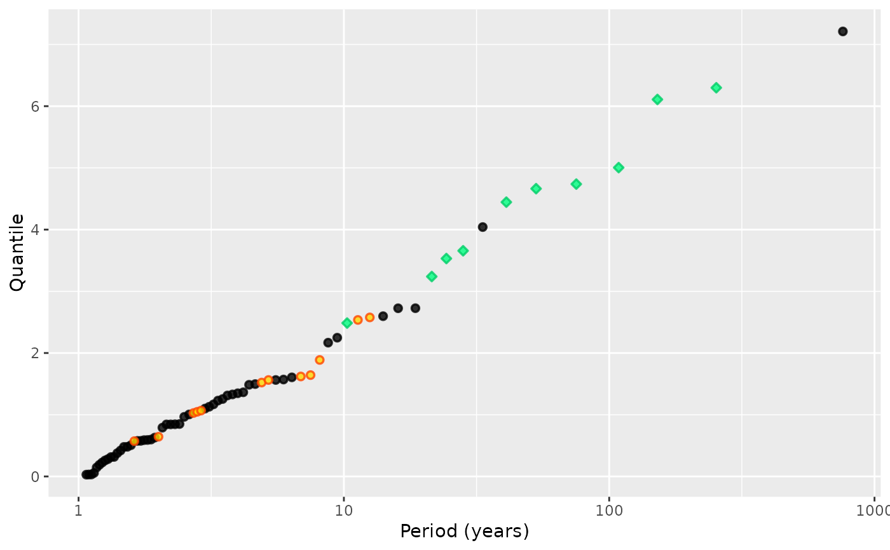

Select the Observations Over a Threshold within
Heterogeneous Data provided as a potData object
Source: R/dataManip.R
threshData.RdSelect the observations over the given threshold within
heterogeneous data provided as a potData object. The data
possibly contain OT, MAX and OTS blocks. The data can optionally
be scaled using a scale that is attached to the result as an
attribute. This function is rather technical and should normally
to be needed by the user.
Arguments
- threshold
The "main" threshold used to select the observations in each block.
- data
A list with elements "OT", "MAX" and "OTS". Each sublist contains a
flaglogical element adatavector or list and a numericduration.- exceed
Logical. If
TRUEthe data returned contains the exceedances over the threshold, i.e. the threshold is substracted from the data.- scale
Logical. If
TRUEthe excesses over the threshold will all be scaled by dividing them by a common "round" positive number. This is intended to avoid numerical problems during optimisation. Note that the round scaling number (a power of 10) is always computed and returned as the"scale"attribute of the result. Even though the data are not scaled this number can be used in theoptimfunction to set theparScaleelement of thecontrollist.- warn
Logical. If
TRUEthe function warns about a threshold which is smaller than all the observation in 'data'.
Value
A list which is comparable to data but with the
observations below the threshold removed, and the related
information changed. For instance if threshold is greater
that some observations in a "MAX" block, these are
discarded and the number r is changed accordingly.
Details
When scale is TRUE, a suitable scale (a positive
number) is chosen as a power of 10 and is used to divide
the exceedances over threshold. This can in some cases
avoid numerical problems.
Note
The 'main' threshold can exceed the threshold of some OTS
blocks and it can also exceed some observations in a MAX block of
data. In the later case the MAX block will be turned into
an OTS block with its threshold set to the main threshold; it can
then non longer have any observations if the main threshold
exceeds all the observations of the original MAX block.
Examples
set.seed(123)
myData <-
potData(data = rexp(50), effDuration = 50,
MAX.effDuration = c(25, 10),
MAX.data = list("MAX1" = tail(sort(rexp(20))),
"MAX2" = tail(sort(rexp(12)))),
OTS.effDuration = c(30, 65, 200),
OTS.threshold = c(1.8, 3.2, 5.0),
OTS.data = list("OTS1" = 1.8 + rexp(5),
"OTS2" = 3.2 + rexp(3),
"OTS3" = 5.0 + rexp(2)))
myData2 <- threshData(threshold = 4, data = myData)
autoplot(myData)
